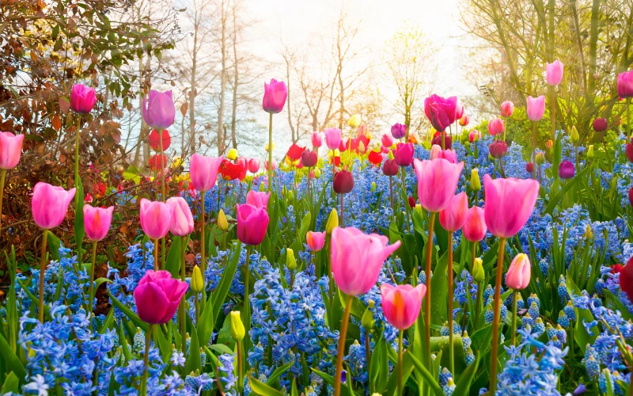
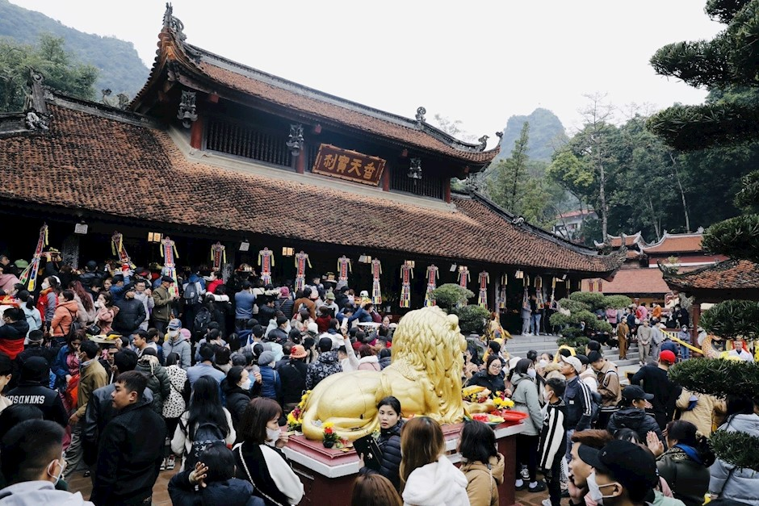
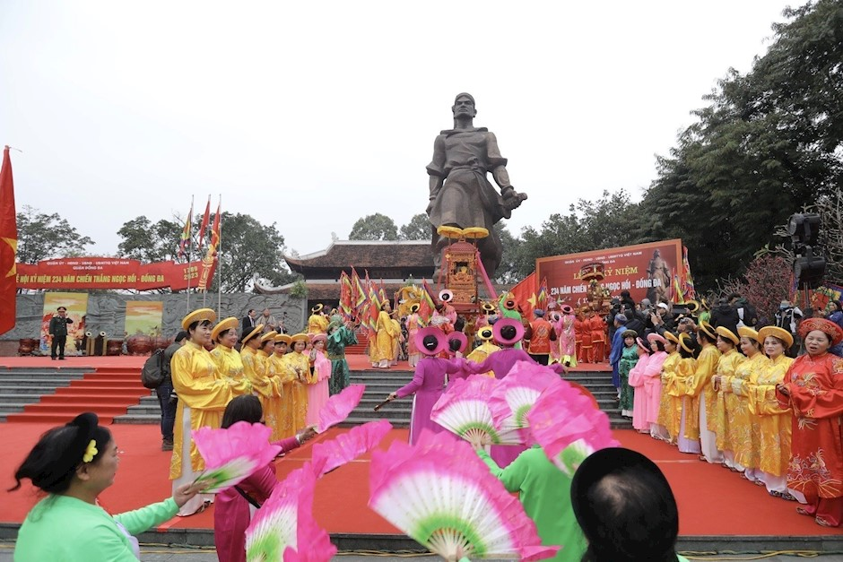
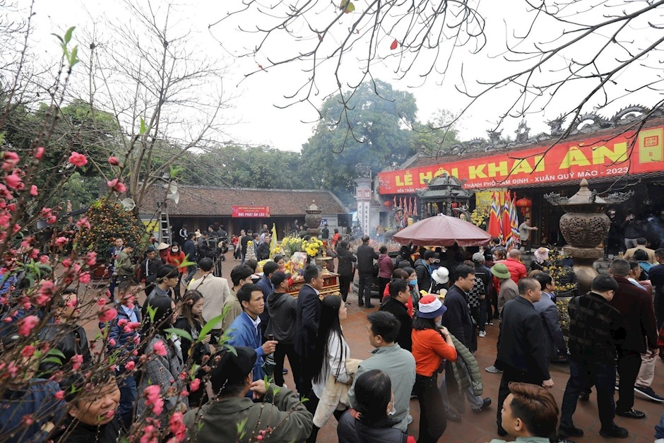

Mùa xuân là mùa của sự sống, của hy vọng và những khởi đầu mới.
Khi xuân về, thiên nhiên như được khoác lên mình một tấm áo mới
với muôn hoa đua nở, cây cối xanh tươi và bầu không khí trong lành.
Những cơn mưa xuân nhẹ nhàng tưới mát đất trời, đánh thức
những mầm non sau mùa đông lạnh giá. Hoa mai vàng rực rỡ,
hoa đào hồng thắm báo hiệu một năm mới an lành và may mắn.
Không khí xuân mang đến cho con người cảm giác dễ chịu,
thư thái và tràn đầy năng lượng.
Xuân về cũng là lúc Tết đến. Gia đình sum họp, quây quần bên mâm cơm
ấm cúng, trẻ em háo hức trong những bộ quần áo mới và tiếng cười
rộn ràng khắp mọi nơi. Mùa xuân không chỉ đẹp bởi cảnh sắc thiên nhiên
mà còn đẹp bởi tình người, bởi sự đoàn viên và yêu thương.
Mùa xuân luôn đến nhẹ nhàng như một lời thì thầm của đất trời. Sau những ngày đông lạnh lẽo, xuân mang theo hơi ấm, ánh nắng dịu dàng và sức sống mới lan tỏa khắp không gian. Đó là mùa của khởi đầu, của hy vọng và những điều tốt đẹp đang chờ đón phía trước.
Khi mùa xuân về, thiên nhiên như được khoác lên mình chiếc áo mới. Cây cối đâm chồi nảy lộc, hoa xuân khoe sắc rực rỡ, từ sắc hồng của hoa đào, vàng tươi của hoa mai đến những cánh hoa nhỏ bé ven đường. Bầu trời trong xanh hơn, không khí trở nên trong lành, khiến lòng người cũng trở nên thư thái và an yên.
Mùa xuân không chỉ làm đẹp cho cảnh vật mà còn chạm đến cảm xúc con người. Đó là lúc gia đình sum họp, là khoảnh khắc mọi người dành cho nhau những lời chúc tốt lành, là thời điểm để nhìn lại chặng đường cũ và bắt đầu những dự định mới. Mỗi mùa xuân đi qua đều để lại trong lòng ta một niềm tin: rằng mọi khó khăn rồi cũng sẽ qua, và những điều tốt đẹp luôn có cơ hội nảy mầm.
Với mùa xuân, cuộc sống như chậm lại để con người cảm nhận rõ hơn từng khoảnh khắc. Một buổi sáng nắng nhẹ, một cơn gió xuân thoảng qua hay mùi hương hoa quen thuộc cũng đủ làm trái tim rung động. Mùa xuân nhắc chúng ta biết trân trọng hiện tại và mở lòng đón nhận những điều mới mẻ.
Mùa xuân không chỉ là một mùa trong năm, mà còn là trạng thái của tâm hồn – nơi hy vọng được gieo mầm và ước mơ bắt đầu lớn lên.
Vẻ Đẹp Mùa Xuân Trong Thi Ca
Mùa xuân luôn là nguồn cảm hứng bất tận cho thi ca Việt Nam. Đó là mùa của sự khởi đầu, tươi mới và tràn đầy hy vọng. Từ những bài thơ cổ điển cho đến thơ hiện đại, mùa xuân được ví như bản giao hưởng của sắc màu, của những chồi non xanh biếc, của những tia nắng đầu tiên sau mùa đông lạnh giá.

Với sinh viên trường Cao Đẳng Đại Việt Sài Gòn Cơ Sở Cần Thơ Khoa sư phạm giáo dục mầm non, việc cảm nhận vẻ đẹp của mùa xuân qua những vần thơ không chỉ giúp làm phong phú đời sống tinh thần mà còn là cách rèn luyện khả năng cảm thụ văn học, phục vụ cho công việc giáo dục trẻ thơ sau này.
Lễ hội chùa Hương

Chùa Hương hay còn được biết đến với tên gọi khác là chùa Hương Sơn, là một quần thể danh lam thắng cảnh tọa lạc ở xã Hương Sơn, huyện Mỹ Đức, Hà Nội.
Quần thể chùa Hương được du khách thập phương phong cho danh hiệu “Biệt chiếm nhất Nam thiên”, là một trong những danh lam thắng cảnh đẹp nhất Việt Nam. Nơi đây xưa kia được coi là biểu tượng tín ngưỡng Phật giáo của thủ đô Hà Nội nói riêng và miền Bắc nói chung.
Lễ hội chùa Hương là một lễ hội lớn về số lượng các phật tử tham gia hành hương. Lễ hội được tổ chức từ mùng 6 tháng Giêng đến hết tháng 3 âm lịch, thường thu hút đông đảo du khách do thời điểm này cảnh sắc và thời tiết đẹp nhất để du khách có thể vãn cảnh.
Lễ hội Gò Đống Đa

Gò Đống Đa là di tích lịch sử tọa lạc tại phố Tây Sơn, phường Quang Trung, Quận Đống Đa, Hà Nội.
Nơi đây gắn liền với chiến thắng của vua Quang Trung dẹp tan quân Thanh vào năm 1789 trong trận chiến Ngọc Hồi-Đống Đa đầy hào hùng.
Lễ hội Gò Đống Đa (Hà Nội) diễn ra vào ngày mùng 5 tháng Giêng âm lịch hàng năm nhằm tưởng nhớ công tích lẫy lừng của vua Quang Trung.
Trong ngày hội có nhiều trò chơi vui khỏe, thể hiện rõ tinh thần thượng võ, trong đó, trò rước Rồng lửa Thăng Long là độc đáo nhất. Chùa Đồng Quang gần gò Đống Đa cũng là nơi diễn ra lễ cầu siêu, dâng hương tưởng nhớ công ơn của những anh hùng, nghĩa sỹ vì dân, vì nước.
Lễ hội Khai ấn đền Trần

Lễ hội Khai ấn Đền Trần hàng năm diễn ra từ ngày 11 đến 16 tháng Giêng; trong đó chính hội Khai ấn diễn ra vào đêm ngày 14 (bắt đầu từ giờ Tý) là một tục lệ cổ tại Tiên Miếu nhà Trần (Phủ Thiên Trường xưa) với ý nghĩa nhân văn lớn lao là cầu cho “quốc thái dân an,” thiên hạ thái bình, thịnh trị; mọi nhà chung hưởng lộc ấn “Tích phúc vô cương” của Đền Trần.
Đây là một trong những lễ hội đầu xuân nổi tiếng nhất Việt Nam. Tham dự Lễ hội Khai ấn Đền Trần tại Khu Di tích Lịch sử-Văn hóa Quốc gia Đặc biệt Đền Trần-Chùa Phổ Minh, phường Lộc Vượng (Nam Định) là dịp để các thế hệ người dân bày tỏ lòng thành kính, tri ân công đức đối với Vương triều Trần - Triều đại thịnh trị bậc nhất trong lịch sử phong kiến Việt Nam và đối với Đức Thánh Trần - Quốc công Tiết chế Hưng Đạo Đại vương Trần Quốc Tuấn - người có công lớn trong các chiến công đánh giặc giữ nước hiển hách của Nhà Trần, được nhân dân suy tôn là bậc Thánh; khơi dậy niềm tự hào về Hào khí Đông A sáng ngời của quân dân Đại Việt 3 lần đại thắng quân Nguyên-Mông xâm lược.